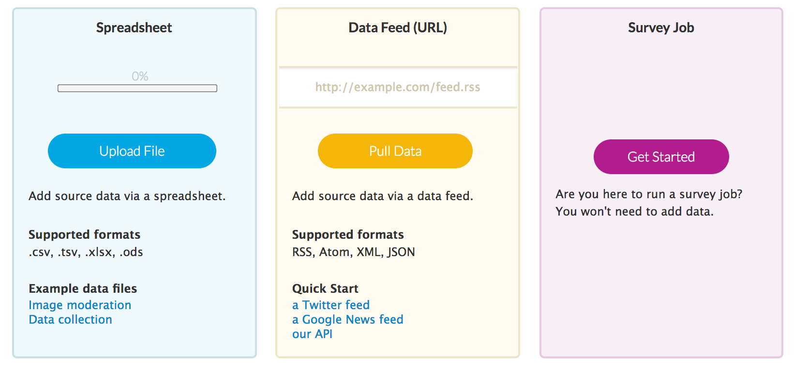
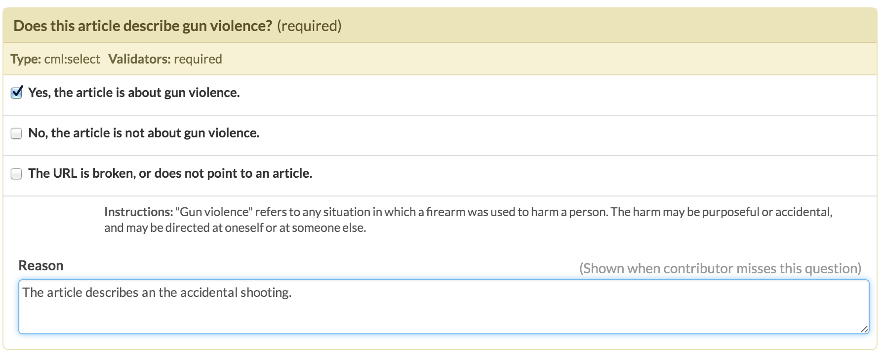
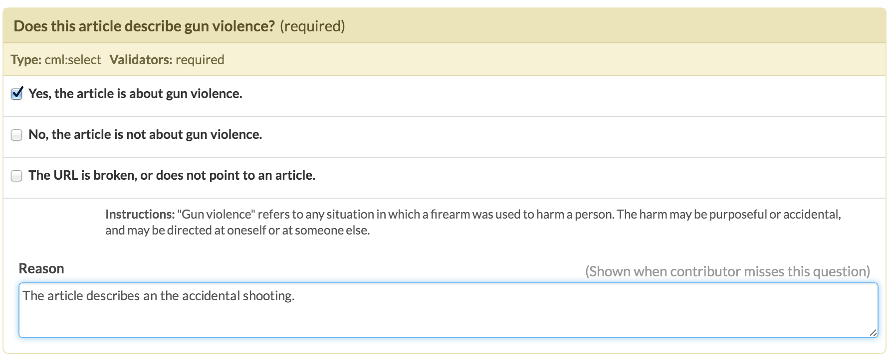
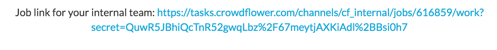

Become a Requester : Assignment 5
Last week, you built a classifier to predict whether or not an article was about gun violence. You were able to estimate how well your classifier did by using cross validation, and you probably ended up with some accuracies that were pretty damn near perfect. But why train a model to label articles that already have labels? The real point of machine learning is not to predict things that you already have answers to, but to try to predict new things. This week, we want to see if our classifier can look at new articles that no one has labeled, and predict whether or not they are about guns.
Predicting on data “in the wild” is much harder than predicting on the training data. Before, we cleaned your training data using the Alchemy API’s state-of-the-art processing, which gave us clean articles like this:
“After a 14-year-old was gunned down Thursday night it appears Chicago went 42 hours without a shooting, but that streak came to an end Saturday afternoon when two people were shot near Ogden Park. Rarely is there a 42-hour period in Chicago without a shooting…”
Now, your data has been scraped from the web and cleaned with cheaper, faster, handwritten-er processing, so you might get articles like this beauty:
“Boy, 3, among 13 injured in Chicago park shooting .zone Boy, 3, among 13 injured in Chicago park shooting #adgSocialTools #adgSocialTools div.social_header #adgSocialTools div.social_main #adgSocialTools div.social_main img, #adgSocialTools div.social_footer img #adgSocialTools div.social_footer #adgSocialTools div.social_footer…”
You can probably imagine that that 99% accuracy on cross validation may have been misleading. So this week we will get a real estimate of how well your classifier can do by taking the articles that your classifier thinks are gun-related, and asking workers on Crowdflower whether they agree or disagree with these predictions.
This assignment has two parts:
- You will need to run your classifier from last week on 1.5 million unlabeled articles, and pull out the articles that it thinks are gun-related.
- You will create a task on Crowdflower to have workers assess your predictions. You will use this to recalculate your classifier’s accuracy.
Part 1: Taking shots in the dark
For this part, you will use your classifier from last week to make predictions about never-before-seen data. You will need to make some changes to the code you wrote last week. There are some engineering details that you need to get right in order for everything to run smoothly, so read the instructions carefully and follow them closely.
-
First, ssh into your account on biglab. You will almost definitely crash your laptop if you try to work locally, unless you have a $!@#-ton of RAM, so now is as good a time as any to learn how to read, write, and run code from the command line! Bonus, we already have the data on biglab for you, so you don’t need to download it. It is in the directory
/home1/n/nets213/data/. You can look at the files in a directory by typingls(for “list”). E.g.$ ssh epavlick@biglab.seas.upenn.edu epavlick@biglab.seas.upenn.edu's password: SEAS SuSE Linux 13.1 epavlick@big05:~> ls /home1/n/nets213/data training-data unlabelled-dataYou should see two directories, one containing your training data (this is the same as last week) and one containing unlabelled data. The unlabelled data is in two parallel files:
articles.txtcontains the text of the articles that you will use for the classifier.urls.txtcontains the urls from which this text came; you will use these in Part 2 of the assignment. -
You will the use the same classifier you built last week, but this time, instead of testing it with cross validation and priniting out the accuracy, you will train it on all your labeled data, and then use it to make predictions on your unlabelled data. To do this, download our new code template (the easiest way would be to use wget!). This code should look very familiar to what you worked with last week, but has a few new functions added, which will handle the reading and vectorizing of the unlabelled data. The only change you will need to make is to replace the
get_features()function with theget_features()function that you wrote last week. If you used any auxilary functions as part of yourget_features, you will need to copy those over too.You can copy over your function, and if you are careful, it should run without complaining. (Note: To give you an idea of the main changes that needed to be made in order to have the classifier work on new data, read through the comments in the main method. Specifically, look at the function
get_matricies_for_unlabelled(). The main difference is that when we convert our feature dictionary into a feature matrix, we need to make sure we use the sameDictVectorizerobject that we used to create the training data. This makes sense- we need to make sure that the column 627 in our new matrix means the same thing as column 627 in the training matrix, otherwise, the classifier will be totally helpless! You can also look at the functionpredict_unlabelled(). This should look very similar to the function you wrote to pull out misclassified examples in the homework last week.) -
Once you have copied over your feature function, you can run the program as follows.
$ python predict_unlabelled.py /home1/n/nets213/data/training-data/articles.txt /home1/n/nets213/data/unlabelled-data/articles.txtYou might want to test your code to make sure it works before running on the full 1.5M articles, so try running with just a few lines of data/unlabelled-data/articles.txt. You can do this by giving the code a third argument, e.g. to predict for the first 10 articles, run
$ python predict_unlabelled.py /home1/n/nets213/data/training-data/articles.txt /home1/n/nets213/data/unlabelled-data/articles.txt 10This will still take a few minutes, since you still need to train on all 70K training articles!
If it works, run on the full 1.5M articles. Once you start it, don’t hold your breadth. Maybe go grab coffee…or a nice dinner downtown…go for a leisurly hike. It took me about 20 minutes to finish on biglab. When the code finishes, it will have created a file called
classifier_predictions.txt, which contains the classifier predictions, one per line. E.g. the first line ofclassifier_predictions.txtis a ‘0’ if the classifier thinks that the first article in data/unlabelled-data/articles.txt is not gun related. My classifier found a little under 190,000 articles that it thought were gun-related. You can check this with the bash command we mentioned in class:$ cat classifier_predictions.txt | sort | uniq -c.
-
You now have three parallel files, each with 1,471,811 lines in it:
unlabelled-data/articles.txt,data/unlabelled-data/urls.txt, andclassifier_predictions.txt. For the next step, you will want to pull out just the urls of the articles which the classifier predicted as “gun-related”- that is, the lines for which classifier_predictions.txt has a ‘1’. You can use your favorite programming language to do this, or do it manually if you are bored and have nothing better to do. If you are interested, here is a great bash command to do it for you:$ paste classifier_predictions.txt /home1/n/nets213/data/unlabelled-data/urls.txt | grep -e "^1" > positive_predicted_urls.txtThis creates a new file, positive_predicted_urls.txt, with two columns, one with the label (which will always be ‘1’), and one with the url. It uses three bash commands:
pastejust takes the contents of both files and pastes them side-by-side;grepsearches for lines which match the pattern^1, where the^just means “beginning of the line”; and the “>” symbol (often read as “redirect”) tells it to put the output into a new file, calledpositive_predicted_urls.txt. -
Finally, you will need to get a sample of these articles to label on Crowdflower. We will label 500 positive predictions. Again, some bash to the rescue:
$ cat positive_predicted_urls.txt | shuf | head -500 > sample.txtThis creates a new file,
sample.txtwhich contains a random 500 lines frompositive_predicted_urls.txt. Again, it uses three bash commands:cat(for “concatenate”) just dumps the entire contents of a file;shufscrambles the order of the lines;head -ntakes the topnlines of its input and ignores the rest.
Part 2: ShootingsHIT
Whew, okay, enough python and bash for now! Its time to design a HIT on Crowdflower! The goal is to have the workers look at each of the URLs you gathered in step 4 of Part 1, and have them judge whether they agree that it is gun-violence-related. This should be a very painless process, hopefully. And look! There are even pictures!
-
Prep your data. You will need the list of urls to be in CSV format. The easiest way to do this will probably be to open
sample.txt, or whatever you called your file, in a spreadsheet program like Google Docs. Then, you can use File->Dowload as->CSV, and save the file. Make sure you add a header to the columns, something informative like “url” or “stuff.” -
Log onto Crowdflower. Click on “Your Jobs” -> “Create New Job.” Then choose “Start from scratch.”

-
Choose the “spreadsheet” option for your data.

-
You will be able to preview your data. It should look something like this.

-
Next, design your interface. There is a nice WYSIWYG editor that will make it very easy to add questions. Just like on MTurk, you can flag variables using the {{VARIABLE_NAME}} syntax. When Crowdflower posts your HIT, it will replace your variable place holders with values from your CSV. E.g. everytime I write {{url}} in the HIT design, it will be replaced with an actual url from my data. Each row in my CSV corresponds to one HIT, so in each HIT, a different url will appear. Here is how my design looked, you are free to be more creative.

-
If you want to, you can also use the HTML editor. This makes it easy to add links to your URL. E.g.

-
Once you are happy with your design, you will need to add in some test questions. These questions will be mixed into your data randomly, and used to evaluate how well the workers are doing. Crowdflower will walk through your data and ask you to label some of the articles yourself, and provide descriptions of why the answer is what it is. You should label about 50 articles to use as test questions.
 
 -
That’s basically it! Choose settings that reflect your feelings about the time and effort of your HIT, your morals, your politics, and your deep philosophies about the value of a hard days work. I had 3 workers judge each URL and paid a penny per URL.
-
Now go! Post! And then obsessively watch the snazzy dashboard as your results come flooding in!

You can see what your HIT looks like by following the link at the bottom of your dashboard.

Once the results are in, you can download them as a CSV file from the dashboard. Answer the few quick questions here about your results. We will do more work analyzing the results (specifically, the worker’s quality) in the coming assignments.
The deliverables are:
- Your
classifier_predictions.txt, which should be a 1,471,811 line file, containing precitions (0 or 1) for each unlabelled article. - The final, labeled data you get from Crowdflower, as a csv file.
- A screenshot of your HIT, as it looked to workers.
- Your responses to these questions.
Like before, please turn in your files using turnin:
$ turnin -c nets213 -p crowdflower -v *This assignment is due Wednesday, October 1. You can work in pairs, but you must declare the fact that you are working together when you turn your assignment.